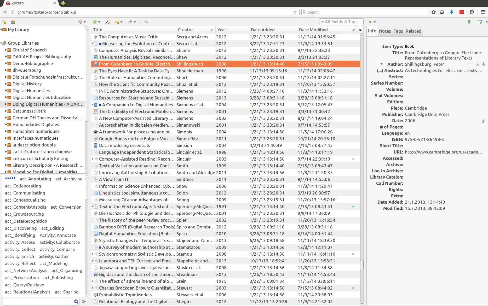

<!doctype html>
<html lang="en">
<head>
<meta charset="utf-8">
<!-- CUSTOMIZE THIS! -->
<title>Zotero-Tutorial</title>
<meta name="author" content="Christof Schöch">
<!-- END -->
<meta name="description" content="Slides">
<meta name="apple-mobile-web-app-capable" content="yes">
<meta name="apple-mobile-web-app-status-bar-style" content="black-translucent">
<meta name="viewport" content="width=device-width, initial-scale=1.0, maximum-scale=1.0, user-scalable=no, minimal-ui">
<link rel="stylesheet" href="css/reveal.css">
<link rel="stylesheet" href="css/theme/simple.css" id="theme">
<!-- Code syntax highlighting -->
<link rel="stylesheet" href="lib/css/zenburn.css">
<!-- Printing and PDF exports -->
<script>
var link = document.createElement( 'link' );
link.rel = 'stylesheet';
link.type = 'text/css';
link.href = window.location.search.match( /print-pdf/gi ) ? 'css/print/pdf.css' : 'css/print/paper.css';
document.getElementsByTagName( 'head' )[0].appendChild( link );
</script>
<!--[if lt IE 9]>
<script src="lib/js/html5shiv.js"></script>
<![endif]-->
</head>

<body>
<div class="reveal">
<!-- THIS IS WHERE THE CONTENT GOES! -->
<!-- Any section element inside of this container is displayed as a slide -->
<div class="slides">
	
<section data-markdown>
<script type="text/template">
# Literaturverwaltung mit Zotero
<hr/>
<p>Workshop Digitale Forschungsmethoden in der Romanistik</p>
<p>Forum Junge Romanistik 2016, Universität Würzburg</p>
<br/>
<hr/>
<br/>
<p>Christof Schöch (CLiGS, Universität Würzburg)</p>
<p></img>&nbsp;</img>&nbsp;</img></p>
</script>
</section>

<section data-markdown>
<script type="text/template">
## Überblick
0. Was ist Zotero?
0. Einstieg: Installation und Demo
0. Praxis: Referenzen eintragen und organisieren
0. Praxis: Referenzen beim Schreiben verwenden und exportieren
0. Weiterführendes
<br/>
<p align="center"></img></p>
</script>
</section>

<section>
<section data-markdown>
<script type="text/template">
# 1. Was ist Zotero?
</script>
</section>

<section data-markdown>
<script type="text/template">
## Funktionen
* Importieren von Referenzen aus verschiedenen Quellen, ohne Abtippen
* Strukturierte Erfassung der Referenzen (unabhängig von der späteren Darstellung)
* Referenzen auf verschiedene Weise organisieren, annotieren und durchsuchen
* Interaktion mit Textprozessoren, um Bibliographien automatisch zu erstellen
* Bibliographien kollaborativ erstellen und/oder veröffentlichen
</script>
</section>

<section data-markdown>
<script type="text/template">
## Vergleich mit anderen Referenz-Managern (Bibsonomy, Citavi)
* Community-basiertes Projekt (=B, ≠C)
* Open Source und kostenfrei (=B, ≠C)
* Interagiert mit Textverarbeitung (=C, ≠B)
* Unterstützung den Schreibprozess nicht (=B, ≠C)
* Web-basiert und offline nutzbar (=C, ≠B) 
* Funktioniert unter Windows, Mac oder Linux (=B, ≠C)
</script>
</section>
</section>

<section>
<section data-markdown>
<script type="text/template">
# 2. Einstieg
</script>
</section>

<section data-markdown>
<script type="text/template">
## Installation von Zotero 
* Versionen: Stand-alone vs. Browser-Plugin
* Verbindung mit dem Textprozessor (Word/LibreOffice) 
* Erweiterungen: Zotfile, Paper Machines, uvm.
</script>
</section>

<section data-markdown>
<script type="text/template">
## Grundfunktionen
* Öffnen von Zotero: Tools > Zotero (oder: Strg+Shift+Z)
* Bibliographie "Demo-Bibliographie" <a href="https://www.zotero.org/groups/demo-bibliographie">https://www.zotero.org/groups/demo-bibliographie</a>
* Drei Spalten: Bibliographie-Organisation, Liste der Einträge, Details zu einem Eintrag
* Import einer Referenz aus einem Katalog-Eintrag (Worldcat) 
* Schreiben eines Artikels und generieren der Bibliographie (mit RTF-Scan oder Tags; siehe Plugin) 
</script>
</section>

<section data-markdown>
<script type="text/template">
</img>
</script>
</section>
</section>

<section>
<section data-markdown>
<script type="text/template">
# 3. Praxis: Referenzen eintragen und organisieren
</script>
</section>

<section data-markdown>
<script type="text/template">
## Referenzen in Zotero eintragen
* Beispiel: Lieblingsbuch in Worldcat suchen (worldcat.org)
* Händisches Eintragen durch Abschreiben
* Import über Identifier wie ISBN oder DOI (Zauberstab)
* Import über die eingebetteten Metadaten des Katalogs (Import-Icon)
</script>
</section>

<section data-markdown>
<script type="text/template">
## Referenzen organisieren
* Collections / Sammlungen
* Tags / Schlagworte: eintragen und für Auswahl nutzen
</script>
</section>
</section>

<section>
<section data-markdown>
<script type="text/template">
# 4. Praxis: Referenzen beim Schreiben verwenden und exportieren
</script>
</section>

<section data-markdown>
<script type="text/template">
## Referenzen beim Schreiben verwenden
* Händisch: Tags setzen, Bibliographie generieren 
* Semi-automatisch: mit RTF-Scan (fehleranfällig)
* Vollautomatisch: mit Plugin für Word oder LibreOffice
</script>
</section>

<section data-markdown>
<script type="text/template">
## Referenzen exportieren
* Referenzen als Bibliographie formatieren
* Referenzen abspeichern / archivieren
</script>
</section>
</section>

<section>
<section data-markdown>
<script type="text/template">
# 5. Weiterführendes
</script>
</section>

<section data-markdown>
<script type="text/template">
## Fortgeschrittene Nutzungsszenarien
* Komplexe Suchabfragen speichern: <a href="https://www.zotero.org/support/searching">https://www.zotero.org/support/searching</a>* Definition eigener Zitierstile mit CSL (Citation Style Language, <a href="http://citationstyles.org/">citationstyles.org/</a>)
* Nutzung der API für Darstellung auf einer Webseite (Beispiel: <a href="https://de.dariah.eu/bibliographie">de.dariah.eu/bibliographie</a>)
</script>
</section>

<section data-markdown>
<script type="text/template">
## Weiterlesen, Weiterlernen?
* Homepage: <a href="http://www.zotero.org">zotero.org</a>
* Dokumentation: <a href="https://www.zotero.org/support/">zotero.org/support</a>
* Einige Zotero-Bibliographien
    * <a href="https://www.zotero.org/groups/gattungsstilistik">Gattungsstilistik</a>
    * <a href="https://www.zotero.org/groups/thtre_classique_french">Théâtre classique</a>
    * <a href="https://www.zotero.org/groups/doing_digital_humanities_-_a_dariah_bibliography">Doing Digital Humanities</a>
</script>
</section>
</section>

<section data-markdown>
<script type="text/template">
<br/>
<br/>
<br/>
<br/>
<p>Autor: Christof Schöch, 2016</p>
<p><a href="http://www.christof-schoech.de">christof-schoech.de</a>
<hr/>
<p>Lizenz: Creative Commons Attribution 4.0 International</p>
<p><a href="https://creativecommons.org/licenses/by/4.0/">creativecommons.org/licenses/by/4.0/</a></p>
</script>
</section>


<!-- DON'T TOUCH UNLESS YOU KNOW WHAT YOU'RE DOING :-) -->
</div>
<script src="lib/js/head.min.js"></script>
<script src="js/reveal.js"></script>
<script>
// Full list of configuration options available at:
// https://github.com/hakimel/reveal.js#configuration
Reveal.initialize({
	controls: true,
	progress: true,
	history: true,
	center: true,
	transition: 'slide', // none/fade/slide/convex/concave/zoom
	// Optional reveal.js plugins
	dependencies: [
		{ src: 'lib/js/classList.js', condition: function() { return !document.body.classList; } },
		{ src: 'plugin/markdown/marked.js', condition: function() { return !!document.querySelector( '[data-markdown]' ); } },
		{ src: 'plugin/markdown/markdown.js', condition: function() { return !!document.querySelector( '[data-markdown]' ); } },
		{ src: 'plugin/highlight/highlight.js', async: true, callback: function() { hljs.initHighlightingOnLoad(); } },
		{ src: 'plugin/zoom-js/zoom.js', async: true },
		{ src: 'plugin/notes/notes.js', async: true }
		]
	});
</script>
</body>
</html>
